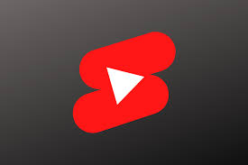

Youtube Shorts

Youtube Shorts are a short form content videos of a maximum of one minute, the video can be less that that but not more than that. They are similar to the short form content on tiktok and instagrame and are usually easy to make since they don't take alot of time and are not that long, they are at the moment the quickest way to becoming viral on youtube or in ither words getting insane amount of views as theyeir role is to try to satisfy viewer who have a short attention span since it is hard for people to focus on long videos and with the increase of othe short form promoting platform as mentooned earlier. With youtube shorts, you can get subscribers quickly and easily as it has been proven to happen even if you are a new creator on the platform, also you may not have to worry about learning alot of this as it is with long form content to be able to market your newly made short videos, youtbe almost does it automatcically and puts your videos infront of as many viewers as possible. This content type is being pushed on more and youtube is promoting even new creator and as a matter of fact, you can make videos of almost everything. You can monenetize or get more from your youtube shorts but as to everything in life, there are requirements for you to start making money. For youtibe shorts, you need to have a minimum of 1000 subscribers to your channel and 3 Million public watch views. Now let these numbers not scare you because youtbe shorts are often pushed out and you will most likely get a minmum of thousands of views on each video and if you have more videos, you shoud be able to reach these requirements in no time and on addition, we are here to help.
Long Form content

Long form content is generally horizontal videos which are longer than 1 minute and have different monetization requirements. It is very different from shorts because you have to learn different things to be able to keep viewers watching your videos to almost finishing it, with this comes learning how to edit, create interestings hooks as the video begind , being able to create good and eye catching thumbnails to attract viewres to click on your videos, witing good titles and so on. The good news is that if you have a bit of money, you could pay someone to do some of these things like editing so that you save more time for yourself to create new staff and manage your channel. Despite all these, you still make almost 70% more income than one with youtube shorts depending on how the video is received by your audience and how youtube rates it. The monetization requirements are 1000 subscribers to your cahnnel, thi si a genreal requirement for both youtube shorts and long form conten. On additon, to the 1000 subscribers for long form content, you will need 3000 watch hours within the last 365 days( 1 year).Again this is will be eay to achieve and we will go into details later